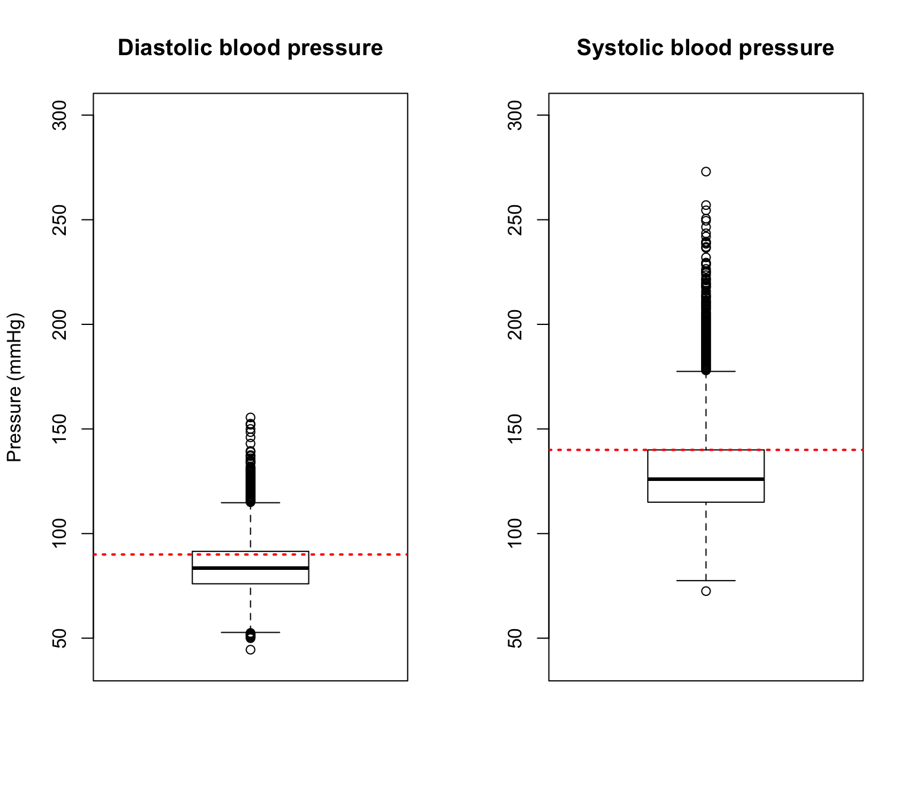
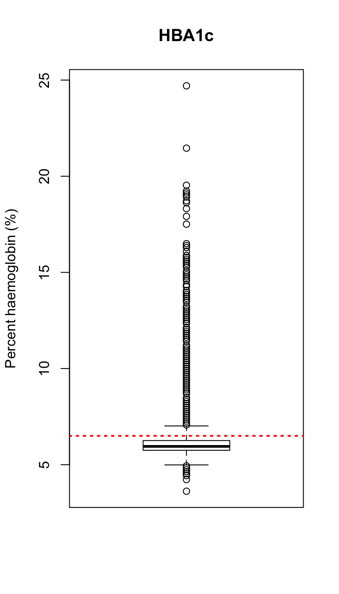

The under-diagnosis of diabetes and hypertension in South Africa
Peter Kamerman
10 June 2021Background
Hypertension (high blood pressure) and diabetes mellitus (high blood glucose) are major causes of mortality and morbidity globally 1,2. Part of the reason for the high burden of disease associated with these two treatable diseases is their silent nature, which means that often the damage to organs (particularly the cardiovascular system and kidneys) occurs before the conditions are diagnosed and treatment started. In this blog, I use the data from the 2016 Demographic and Health Survey (DHS) for South Africa, a nationally representative sample of adult South Africans 3, to show that there is significant under-diagnosis of both these treatable conditions.
As part of the 2016 DHS, information was collected on whether participants had ever received a diagnosis of high blood pressure and/or diabetes mellitus. In addition, in a sub-sample of consenting participants, blood pressure was measured and blood samples were taken for the measurement of HBA1c (HBA1c measures the percentage of the protein haemoglobin that has sugar bound to it, and is used as an indicator of how high a person’s blood glucose levels have been over a 2-3 month period).
More specifically, all participants were asked, “Has a doctor, nurse or other health worker told you that you have or have had any of the following conditions: high blood pressure?” and “Has a doctor, nurse or other health worker told you that you have or have had any of the following conditions: diabetes or high blood sugar?”.
In a sub-sample of consenting adult participants (⋝15 years old), three blood pressure measurements were taken using an Omron 1300 digital blood pressure monitor. Measurements were taken at intervals of three minutes or more. For the classification of hypertension, the mean of the last two measurements were taken, and participants with a systolic pressure ⋝140mmHg or diastolic pressure ⋝90mmHg were classified as having hypertension 4.
Also in a sub-sample of consenting adult participants, nurses collected finger-prick blood specimens for laboratory HbA1c testing. Blood from the finger prick was collected on a filter paper card, and the dried blood spot analysed at a later stage for total haemoglobin and glycated haemoglobin (HBA1c) concentrations. Total haemoglobin concentration was measured by a colourimetric method monitoring the change in absorbance at 410nm. HbA1c concentration was measured by a turbidimetric immunoinhibition method monitoring the change in absorbance at 340nm. HbA1c concentration was expressed as a percentage of total haemoglobin concentration, with those participants with an HBA1c level of ⋝6.5% being classified as having diabetes mellitus 5. Because the HBA1c was measured from a dried blood spot, a correction was applied: \(HBA1c_{(corrected)} = \frac{(HBA1c_{(dried~blood~spot)} - 0.228)}{0.9866}\). The veracity of this formula has not been confirmed.
This blog post serves two purposes. Firstly, it investigates whether there is under-diagnosis of hypertension and diabetes mellitus in the adult population of South Africa. Secondly, it serves as a mini tutorial on using the R statistical environment to analyse DHS data.
Data importing and preparation
The first step in the analysis was to get the data. The data for all DHS surveys conducted globally can be obtained from the DHS program website 6. The data are provided in a variety of different formats, but not as CSV or RDS files, file formats that would make it easier for R users to import the data. Instead, I downloaded the South African 2016 DHS data in SPSS format (SAV files), and used the foreign package to import the data into my R session.
On the DHS Program website, the data are not provided in a single file, instead they are divided according to the questionnaire used. Consequently, I had to download, import, and combine three files: a file with biomarker data (blood pressure and HBA1c data), a file with adult health questionnaire data for women, and a file with adult health questionnaire data for men. The adult health files contained the data on whether a diagnosis of hypertension and/or diabetes had ever been made, and information on the sampling design of the study that informs how the data are analysed (i.e., design weights, clusters, and strata).
# Load package
library(foreign)
# Import datasets
## Blood pressure and HBA1c data
biomarker <- read.spss('ZAPR71FL.SAV',
to.data.frame = TRUE)
## Survey design data (weights, clusters, strata) and data on
## whether a diagnosis of hypertension and/or diabetes had ever been made
women <- read.spss('ZAAHW71FL.SAV',
to.data.frame = TRUE)
men <- read.spss('ZAAHM71FL.SAV',
to.data.frame = TRUE)The next step was to get the data ready for analysis by extracting the required columns of data, combining the three separate data files, cleaning the data, and calculating derived values (i.e., hypertension from the blood pressure data, and diabetes from the HBA1c data).
Extract and rename required columns
# Load packages
library(dplyr) # For general data munging
#-- Biomarker --#
biomarker_reduced <- biomarker %>%
# Select columns
select(HV001, # Cluster number
HV002, # Household number
HVIDX, # Respondent line number
SH228A, # Second reading systolic (women)
SH228B, # Second reading diastolic (women)
SH232A, # Third reading systolic (women)
SH232B, # Third reading diastolic (women)
SH328A, # Second reading systolic (men)
SH328B, # Second reading diastolic (men)
SH332A, # Third reading systolic (men)
SH332B, # Third reading diastolic (men)
SHWHBA1C, # HBA1c (women). Note: 3 decimals implicit
SHMHBA1C) %>% # HBA1c (men). Note: 3 decimals implicit
# Rename variables
## SBP/DBP = systolic/diastolic blood pressure,
## W/M = women/men
rename(V001 = HV001,
V002 = HV002,
V003 = HVIDX,
SBP_2_W = SH228A,
DBP_2_W = SH228B,
SBP_3_W = SH232A,
DBP_3_W = SH232B,
SBP_2_M = SH328A,
DBP_2_M = SH328B,
SBP_3_M = SH332A,
DBP_3_M = SH332B,
HBA1C_W = SHWHBA1C,
HBA1C_M = SHMHBA1C)
#-- Women --#
women_reduced <- women %>%
# Select columns
select(V001, # Cluster number
V002, # Household number
V003, # Respondent line number
V021, # Primary sampling unit (PSU)
V023, # Sampling strata
SWEIGHT, # Sample weight Note: 6 decimals implicit
S1413A, # Diagnosed with high blood pressure
S1413F) %>% # Diagnosed with diabetes
# Rename variables
rename(Hypertension = S1413A,
Diabetes = S1413F)
#-- Men --#
men_reduced <- men %>%
# Select columns
select(MV001, # Cluster number
MV002, # Household number
MV003, # Respondent line number
MV021, # Primary sampling unit (PSU)
MV023, # Sampling strata
SMWEIGHT, # Sample weight Note: 6 decimals implicit
SM1108A, # Diagnosed with high blood pressure
SM1108F) %>% # Diagnosed with diabetes
# Rename variables
rename(V001 = MV001,
V002 = MV002,
V003 = MV003,
V021 = MV021,
V023 = MV023,
SWEIGHT = SMWEIGHT,
Hypertension = SM1108A,
Diabetes = SM1108F)Combining the datasets
To combine the three datasets I first did a “vertical join” between the women_reduced and men_reduced dataframe by appending the men_reduced onto the women_reduced dataframe. This is possible because the variables (columns) in each dataframe are the same, so you are merely adding cases to the bottom of one of the dataframes. I called the new dataframe: women_and_men.
The women_and_men dataframe shared three columns with the biomarker_reduced dataframe, and these three columns could then act as indices to form the basis of a “horizontal join” between the two dataframes. The shared indices essentially allows one to align the rows of two dataframes, and in doing so, allow data from the same participant across two dataframes to be combined into in a single row.
#-- Append men_reduced to women_reduced --#
women_and_men <- bind_rows(women_reduced, men_reduced)
#-- Join biomarker to women_and_men using columns V001, V002, V003 --#
# V001: Cluster number
# V002: Household number
# V003: Respondent line number
combined <- left_join(women_and_men, biomarker_reduced)Clean the combined dataset
Note:
I recoded “Don’t know” answers for the hypertension and diabetes questions as “No”
I recoded non-numeric data codes (“Inconclusive”) for HBA1c as missing data
I recoded non-numeric data codes (“Other”, Technical problems") for blood pressure measurements as missing data
# Load packages
library(forcats) # For working with factors
combined_clean <- combined %>%
# Remove joining columns (I don't need them now)
select(-c(V001, V002, V003)) %>%
# Convert columns to correct format
mutate(# Blood pressure columns to numeric
# This conversion also will convert non-numeric data codes ("Other", "Technical problems") to <NA> (missing data)
across(contains('BP_'), ~ as.numeric(as.character(.x))),
# HBA1C columns to numeric
# This conversion also will convert non-numeric data codes ("inconclusive") to <NA>
across(starts_with('HBA'), ~ as.numeric(as.character(.x)))) %>%
# Convert SWEIGHT to correct number of decimals (6 decimals)
# This is a VERY important step
mutate(SWEIGHT = SWEIGHT / 1000000) %>%
# Correct all columns of HBA1C data to correct number of decimals (3 decimals)
# This is a VERY important step
mutate(across(starts_with('HBA'), ~ .x / 1000)) %>%
# Recode hypertension and diabetes factor levels
mutate(Hypertension = fct_collapse(Hypertension,
Yes = 'Yes',
No = c("No", "Don't know")),
Diabetes = fct_collapse(Diabetes,
Yes = 'Yes',
No = c("No", "Don't know"))) Generate calculated variables
The systolic and diastolic blood pressures had to be calculated from the second and third measurements taken during data collection, and from the resulting averages, I had to determine which participants had hypertension.
For HBA1c, I first needed to apply a correction factor because the assay was performed using dried and not fresh venous blood. Then I had to use the resulting HBA1c levels to determine which participants had diabetes.
Once I had made these calculations, I was left with a version of the data (analysis_set) with all the variables I needed to perform the analyses.
#-- Generate the analysis set of data --#
analysis_set <- combined_clean %>%
# Calculate average systolic and diastolic blood pressures
rowwise() %>%
mutate(SBP_W = mean(c_across(cols = c(6, 8)), na.rm = TRUE),
DBP_W = mean(c_across(cols = c(7, 9)), na.rm = TRUE),
SBP_M = mean(c_across(cols = c(10, 12)), na.rm = TRUE),
DBP_M = mean(c_across(cols = c(11, 13)), na.rm = TRUE)) %>%
ungroup() %>%
# Remove original columns
select(-contains('_2_'), -contains('_3_')) %>%
# Combine men and women columns
mutate(# Systolic blood pressure
SBP = case_when(
is.nan(SBP_W) ~ SBP_M,
TRUE ~ SBP_W
),
# Diastolic blood pressure
DBP = case_when(
is.nan(DBP_W) ~ DBP_M,
TRUE ~ DBP_W
),
# HBA1C
HBA1C = case_when(
is.na(HBA1C_W) ~ HBA1C_M,
TRUE ~ HBA1C_W
)) %>%
# Remove 'M' (men) and 'W' (women) columns. They are no longer needed.
select(-ends_with('_W'), -ends_with('_M')) %>%
# Calculate whether hypertension is present
mutate(Hypertension_objective = case_when(
SBP >= 140 |
DBP >= 90 ~ 'Yes',
SBP < 140 |
DBP < 90 ~ 'No'
)) %>%
# Correct HBA1c based on the use of a dried blood spot instead
# of fresh venous blood (HBA1c from the dried sample - 0.228) / 0.9866
mutate(HBA1C = (HBA1C - 0.228) / 0.9866) %>%
# Calculate whether diabetes is present
mutate(Diabetes_objective = case_when(
HBA1C >= 6.5 ~ 'Yes',
HBA1C < 6.5 ~ 'No'
)) %>%
# Convert Hypertension_objective and Diabetes_objective to factors
mutate(across(ends_with('objective'), ~factor(.x)))
#-- Get rid of pesky <NaN> values in SBP and DBP columns --#
analysis_set$SBP[is.nan(analysis_set$SBP)] <- NA
analysis_set$DBP[is.nan(analysis_set$DBP)] <- NAData analysis
Once I had the analysis dataset (analysis_set), I needed to convert the dataframe into a design object from the survey package. Survey design objects are key to analysing surveys such as the DHS, which have complex sampling designs. In the case of the South African 2016 DHS survey, it is a stratified two-stage sampling design. This complex sampling needs to be factored into the calculation of point estimates and measures of precision (e.g., confidence intervals) so that these estimates are representative of the population the survey represents.
If you want to know more about design-based analysis and using the survey package, I recommend that you visit Thomas Lumley’s website: Survey analysis in R.
NB: All data presented in this blog are crude estimates. That is, I have not standardised for variables such as age and sex.
Create design object
Generation of a design object requires three bits of information about the survey: i) the primary sampling unit, ii) the strata, and iii) the sampling/survey weights.
The primary sampling unit (PSU) is the first unit that is sampled in the design. In the case of the 2016 DHS for South Africa, enumeration areas (EAs, small geographic areas with clearly distinguishable boundaries) from the 2011 population census that were of manageable size were treated as primary sampling units (PSUs), whereas small neighbouring EAs were pooled together to form new PSUs, and large EAs were split into conceptual PSUs. In total, 750 PSUs were selected in the survey. Stratification is a method of breaking up the population into different groups based on certain identifying characteristics. Sampling is done within each stratum, and because of the homogeneity within each stratum, the process increases the precision of estimates that are calculated. For the 2016 DHS for South Africa, each of the provinces in the country was stratified into urban, farm, and traditional areas, yielding 26 sampling strata within the 750 PSUs. Sampling weights are weights applied to every participant in the survey that correct for over or under representation of the group that person represents in the population. For example, women in a rural area may have been over-sampled, and thus the weight carried by data from those women must be decreased.
# load packages
library(survey)
# Create design object
design_obj <- svydesign(ids = ~V021, # Primary sampling units
strata = ~V023, # Strata
weights = ~SWEIGHT, # Design weights
data = analysis_set)Under-diagnosis of hypertension
The first analysis I completed was to determine whether there was under-diagnosis of hypertension in the population.
Exploratory plot of systolic and diastolic blood pressures
The first step in any analysis is to get a feel for the data by plotting it. In this case, I constructed box-and-whisker plots of diastolic and systolic blood pressures (see below). Importantly, I used the survey::svyboxplot function, thus ensuring that all the values (e.g., median, 25th percentile) in the box-and-whisker plot were calculated while taking the survey design into consideration.
The horizontal red lines on the box-and-whisker plots below indicate the hypertension cut-off values (systolic pressure ⋝140mmHg and/or diastolic pressure ⋝90mmHg)
# Set plotting area to have 1 row and 2 columns
par(mfcol = c(1, 2))
# Plot diastolic blood pressure
svyboxplot(DBP ~ 1, # data to plot
design = design_obj, # Design object
all.outliers = TRUE, # Show all outliers
ylab = 'Pressure (mmHg)', # Y-axis label
main = 'Diastolic blood pressure', # Plot title
ylim = c(40, 300)) # Y-axis limits
# Add a horizontal dotted ,line at the 90 mmHg cut-off
abline(h = 90, # Threshold value
col = 'red', # Line colour: red
lwd = 2, # Line weight
lty = 3) # Line type (dotted)
# Plot systolic blood pressure
svyboxplot(SBP ~ 1,
design = design_obj,
all.outliers = TRUE, # Show all outliers
main = 'Systolic blood pressure',
ylim = c(40, 300))
# Add a horizontal dotted ,line at the 140 mmHg cut-off
abline(h = 140,
col = 'red',
lwd = 2,
lty = 3)
After plotting the data, I calculated the proportion (with 95% confidence intervals) of people who remembered being told that they have high blood pressure. I used the survey::svyciprop function to make the calculations while factoring in the sampling design of the survey. For reporting purposes, I converted the proportions to percentages.
# Load packages
library(kableExtra) # prints pretty tables
# Calculate the proportion of participants with a previous diagnosis of hypertension
hypertension_diag <- svyciprop(~ Hypertension, # Variable
design = design_obj) # Design object
# Tabulate
# Create a dataframe from svyciprop object
data.frame(# Extract estimate, convert to percentage, round to first decimal
'Estimate' = round(100 * as.vector(hypertension_diag), 1),
# Extract CI2.5%, convert to percentage, round to first decimal
'Lower_CI' = round(100 * attr(hypertension_diag, 'ci')[1], 1),
# Extract CI97.5%, convert to percentage, round to first decimal
'Upper_CI' = round(100 * attr(hypertension_diag, 'ci')[2], 1)) %>%
# Make a new column (Confidence interval 95%) using the two *_CI columns
mutate('Confidence interval 95%' = paste(Lower_CI, 'to', Upper_CI)) %>%
# Remove old *_CI columns
select(-ends_with('CI')) %>%
# Draw the table
kbl(caption = 'Percent participants who remember previously being told that they have hypertension (crude estimate)', # Add a caption
row.names = FALSE, # No row names
align = 'rr') %>% # Right align both columns
# Add some basic styling to the table
kable_styling(bootstrap_options = 'striped')| Estimate | Confidence interval 95% |
|---|---|
| 18.9 | 17.7 to 20.1 |
After calculating the percentage of participants who remembered ever having been told that they have high blood pressure, I then calculated the proportion of people who had hypertension based on the blood pressure measurements made during the survey. I used the survey::svyciprop function again, and converted the proportion to a percentage for reporting.
# Calculate the proportion of participants diagnosed with hypertension based on
# blood pressure measurements at the time of the survey
hypertension_measured <- svyciprop(~ Hypertension_objective, # Variable
design = design_obj) # Design object
# Tabulate
data.frame('Estimate' = round(100 * as.vector(hypertension_measured), 1),
'Lower_CI' = round(100 * attr(hypertension_measured, 'ci')[1], 1),
'Upper_CI' = round(100 * attr(hypertension_measured, 'ci')[2], 1)) %>%
mutate('Confidence interval 95%' = paste(Lower_CI, 'to', Upper_CI)) %>%
select(-ends_with('CI')) %>%
kbl(caption = 'Percent participants with hypertension based on current blood pressure measurements (crude estimate)',
row.names = FALSE,
align = 'rr') %>%
kable_styling(bootstrap_options = 'striped')| Estimate | Confidence interval 95% |
|---|---|
| 37.1 | 35.3 to 38.9 |
In the context of my objectives, there was a major difference in the percentage of people who remember previously being told that they have high blood pressure (19%), and the percentage with hypertension based on measurements taken at the time of the survey (37%). Indeed, the estimate based on current measurements is roughly double that of the estimate based on awareness of a previous diagnosis. The prevalence of hypertension based on measured pressures in this survey (37%), is consistent with global estimates, especially for low- and middle-income countries, which have seen a rapid rise in the prevalence of hypertension in the past two decades 1,7,8.
I think that the question on whether participants had ever been told that they have high blood pressure by a medical professional may under-estimate the true diagnosis rate because it requires the participant to recall having received that diagnosis. But even when considering this possibility, the data indicate a massive under-diagnosis of hypertension in the South African population.
One way to check whether someone has received a diagnosis is to look at whether they are being treated for the condition. According to the official report for the 2016 South African DHS survey (see footnote 3, page 269), 15% of men and 22% of women are taking medication to control their blood pressure, which is consistent with the prevalence of people who have been told that they have high blood pressure (~19%). However, I did not checked if people who could not remember a hypertension diagnosis were, in fact, taking medication for hypertension. I suspect that in some individuals this incongruency may have been present, but not enough to confound the results significantly.
One thing to remember about these data is that I have presented crude estimates, which have not been standardised for age, and age is an important risk factor for hypertension. The effect of age on hypertension is best illustrated by a recent study of a large cohort of South Africans living in a rural community, and who were aged ⋝40 years 9. In that study, ~60% of participants had hypertension, and these age-related data are in agreement with those reported in the official report for the 2016 South African DHS survey (see footnote 3, page 269).
Under-diagnosis of diabetes mellitus
The next part of my analysis was to look at whether there was under-diagnosis of diabetes mellitus in South Africa.
Exploratory plot of HBA1c
As with the hypertension data, I produced an exploratory box-and-whisker plot, but this time of HBA1c levels. In this HBA1c figure (see below), the horizontal red lines indicate the diabetes mellitus cut-off value (HBA1c ⋝6.5%).
# Reset plotting area to 1 row and 1 column
par(mfcol = c(1, 1))
# Plot HBA1c data
svyboxplot(HBA1C ~ 1,
design = design_obj,
all.outliers = TRUE,
ylab = 'Percent haemoglobin (%)',
main = 'HBA1c')
# Add a horizontal dotted ,line at the 6.6% cut-off
abline(h = 6.5,
col = 'red',
lwd = 2,
lty = 3)
My first action was to calculate the proportion of people who remembered being told that they have high blood sugar or diabetes. I converted the proportions to percentages when reporting the data.
# Calculate the proportion of participants with a previous diagnosis of diabetes
diabetes_diag <- svyciprop(~ Diabetes,
design = design_obj)
# Tabulate
# Create a dataframe from svyciprop object
data.frame('Estimate' = round(100 * as.vector(diabetes_diag), 1),
'Lower_CI' = round(100 * attr(diabetes_diag, 'ci')[1], 1),
'Upper_CI' = round(100 * attr(diabetes_diag, 'ci')[2], 1)) %>%
mutate('Confidence interval 95%' = paste(Lower_CI, 'to', Upper_CI)) %>%
select(-ends_with('CI')) %>%
kbl(caption = 'Percent participants who remember previously being told that they have diabetes (crude estimate)',
row.names = FALSE,
align = 'rr') %>%
kable_styling(bootstrap_options = 'striped')| Estimate | Confidence interval 95% |
|---|---|
| 4.5 | 3.9 to 5.1 |
Next I calculated the proportion of people who had diabetes based on the HBA1c measurements made during the survey, converting the proportions to percentages along the way.
# Calculate the proportion of participants diagnosed with diabetes based on
# HBA1c measurements at the time of the survey
diabetes_measured <- svyciprop(~ Diabetes_objective,
design = design_obj)
# Tabulate
data.frame('Estimate' = round(100 * as.vector(diabetes_measured), 1),
'Lower_CI' = round(100 * attr(diabetes_measured, 'ci')[1], 1),
'Upper_CI' = round(100 * attr(diabetes_measured, 'ci')[2], 1)) %>%
mutate('Confidence interval 95%' = paste(Lower_CI, 'to', Upper_CI)) %>%
select(-ends_with('CI')) %>%
kbl(caption = 'Percent participants with diabetes based on current HBA1c measurements (crude estimate)',
row.names = FALSE,
align = 'rr') %>%
kable_styling(bootstrap_options = 'striped')| Estimate | Confidence interval 95% |
|---|---|
| 11.4 | 10.4 to 12.5 |
When comparing the data from the two diabetes analyses, there clearly is a gross under-diagnosis of the prevalence of diabetes based on the number of people who remembered being given such a diagnosis (4.5%) compared to those individuals meeting the definition of diabetes based on HBA1c levels (11.4%). Indeed, the estimate based on current measurements is more than double that of the estimate based on awareness of a previous diagnosis.
The prevalence I report here is similar to that reported in a recent systematic review and meta-analysis by Pheiffer and colleagues on type II diabetes in South Africa 10. Using pooled data, from studies using objective criteria for the diagnosis of diabetes, they reported a prevalence ~15% in people aged ⋝25 years. The 2016 South African DHS data includes a wider age range (⋝15 years), which may explain the difference in prevalence. Another reason for the slight discrepancy between the prevalence reported by Pheiffer and colleagues and the data I present here is that the correction factor applied to the HBA1c data in the DHS for using a dried blood spot and not a fresh venous blood may have over-corrected the HBA1c. Not applying the correction leads to an estimated diabetes prevalence of 21%.
Conclusion
Using the estimate of diabetes prevalence (11.4%) from the 2016 South African DHS, about 6.7 million adult South Africans have diabetes. Similarly, about 21.8 million South African adults have hypertension (37%). Thus there is a high burden (number of people affected) of two diseases that are major causes of mortality and morbidity.
According to 2017 data from Statistics South Africa 11, complications of diabetes was the second most common cause of death (5.7% of deaths); the biggest killer was tuberculosis (6.4% of deaths). Hypertensive diseases was the seventh most common cause of death (4.7% deaths), but when you add in diseases where hypertension is a major contributing factor, then the contribution of hypertension becomes more apparent (e.g., cerebrovacular disease caused 5.0% of deaths).
The data I present here shows that there is significant under-diagnosis of diabetes mellitus and hypertension. Both these diseases are treatable, so the under-diagnosis means greater morbidity and mortality from these diseases, which is a big worry from a public health point of view.
Session information
## R version 4.0.4 (2021-02-15)
## Platform: x86_64-apple-darwin17.0 (64-bit)
## Running under: macOS Catalina 10.15.7
##
## Matrix products: default
## BLAS: /Library/Frameworks/R.framework/Versions/4.0/Resources/lib/libRblas.dylib
## LAPACK: /Library/Frameworks/R.framework/Versions/4.0/Resources/lib/libRlapack.dylib
##
## locale:
## [1] en_US.UTF-8/en_US.UTF-8/en_US.UTF-8/C/en_US.UTF-8/en_US.UTF-8
##
## attached base packages:
## [1] grid stats graphics grDevices utils datasets methods
## [8] base
##
## other attached packages:
## [1] kableExtra_1.3.4 survey_4.0 survival_3.2-9 Matrix_1.3-2
## [5] forcats_0.5.1 stringr_1.4.0 dplyr_1.0.5 purrr_0.3.4
## [9] readr_1.4.0 tidyr_1.1.3 tibble_3.1.0 ggplot2_3.3.3
## [13] tidyverse_1.3.0
##
## loaded via a namespace (and not attached):
## [1] Rcpp_1.0.6 svglite_2.0.0 lubridate_1.7.10 lattice_0.20-41
## [5] assertthat_0.2.1 digest_0.6.27 utf8_1.2.1 R6_2.5.0
## [9] cellranger_1.1.0 backports_1.2.1 reprex_1.0.0 evaluate_0.14
## [13] httr_1.4.2 highr_0.8 pillar_1.5.1 rlang_0.4.10
## [17] readxl_1.3.1 rstudioapi_0.13 jquerylib_0.1.3 rmarkdown_2.7
## [21] splines_4.0.4 webshot_0.5.2 munsell_0.5.0 broom_0.7.5
## [25] compiler_4.0.4 modelr_0.1.8 xfun_0.22 pkgconfig_2.0.3
## [29] systemfonts_1.0.1 htmltools_0.5.1.1 mitools_2.4 tidyselect_1.1.0
## [33] viridisLite_0.3.0 fansi_0.4.2 crayon_1.4.1 dbplyr_2.1.0
## [37] withr_2.4.1 jsonlite_1.7.2 gtable_0.3.0 lifecycle_1.0.0
## [41] DBI_1.1.1 magrittr_2.0.1 scales_1.1.1 cli_2.3.1
## [45] stringi_1.5.3 fs_1.5.0 xml2_1.3.2 bslib_0.2.4
## [49] ellipsis_0.3.1 generics_0.1.0 vctrs_0.3.6 tools_4.0.4
## [53] glue_1.4.2 hms_1.0.0 yaml_2.2.1 colorspace_2.0-0
## [57] rvest_1.0.0 knitr_1.31 haven_2.3.1 sass_0.3.1Mills KT et al. Global disparities of hypertension prevalence and control: A systematic analysis of population-based studies from 90 countries. Circulation 134:441-50, 2016. PMID: 27502908↩︎
GBD 2017 Causes of Death Collaborators. Global, regional, and national age-sex-specific mortality for 282 causes of death in 195 countries and territories, 1980-2017: a systematic analysis for the Global Burden of Disease Study 2017. Lancet 392:1736-1788, 2018. PMID: 30496103↩︎
National Department of Health (NDoH), Statistics South Africa (Stats SA), South African Medical Research Council (SAMRC), and ICF. 2019. South Africa Demographic and Health Survey 2016. Pretoria, South Africa, and Rockville, Maryland, USA: NDoH, Stats SA, SAMRC, and ICF (Link)↩︎
Unger T et al. 2020 International Society of Hypertension Global Hypertension Practice Guidelines. Hypertension 75:1334-1357, 2020. PMID: 32370572↩︎
American Diabetes Association. Classification and diagnosis of diabetes. Diabetes Care 38 (Suppl. 1):S8–S16, 2015. PMID: 25537714↩︎
You need to register as a user on the DHS Program system, and then request access to data for a defined project. The registration process is quick, and submitting a request for data is straightforward. The permissions to use the data usually comes within 24-hour of submitting the request.↩︎
Kearney PM et al. Global burden of hypertension: analysis of worldwide data. Lancet 365:217-23, 2005. PMID: 15652604↩︎
Mills KT et al. The global epidemiology of hypertension. Nature Reviews Nephrology 16:223-237, 2020. PMID: 32024986.↩︎
Gaziano TA et al. Cardiometabolic risk in a population of older adults with multiple co-morbidities in rural south africa: the HAALSI (Health and Aging in Africa: longitudinal studies of INDEPTH communities) study. BMC Public Health 17, 206, 2017. DOI: 10.1186/s12889-017-4117-y↩︎
Pheiffer C et al. Prevalence of Type 2 Diabetes in South Africa: A Systematic Review and Meta-Analysis. International Journal Environmental Research and Public Health 18:5868, 2021. PMID: 34070714.↩︎
Statistics South Africa. Mortality and causes of death in South Africa: Findings from death notification 2017 (Statistical release P0309.3). Link↩︎